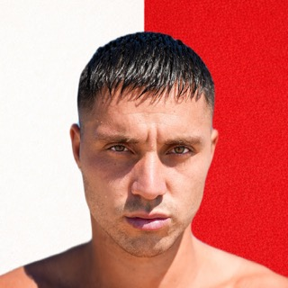
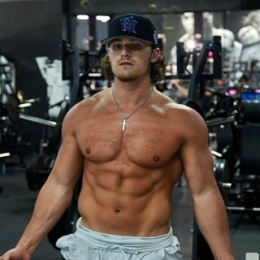

Mementoe3.1M+ subscribers

Tayo Ricci3M+ subscribers
Jack Gordon853K+ subscribers
Yash Sharma Fitness500K+ subscribers
HRVizak316K+ subscribers
Dude Real Media180K+ subscribers
Gold Island Music165K+ subscribers

Ryan Haff140K+ followers